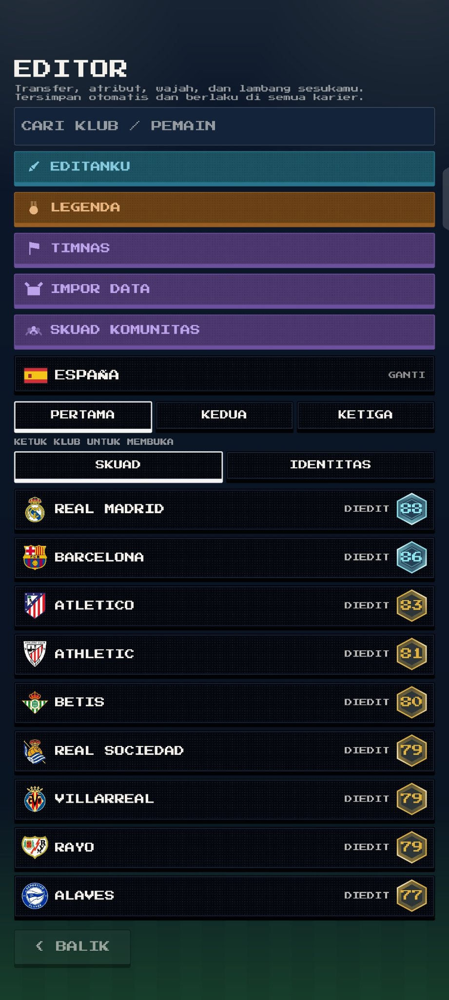
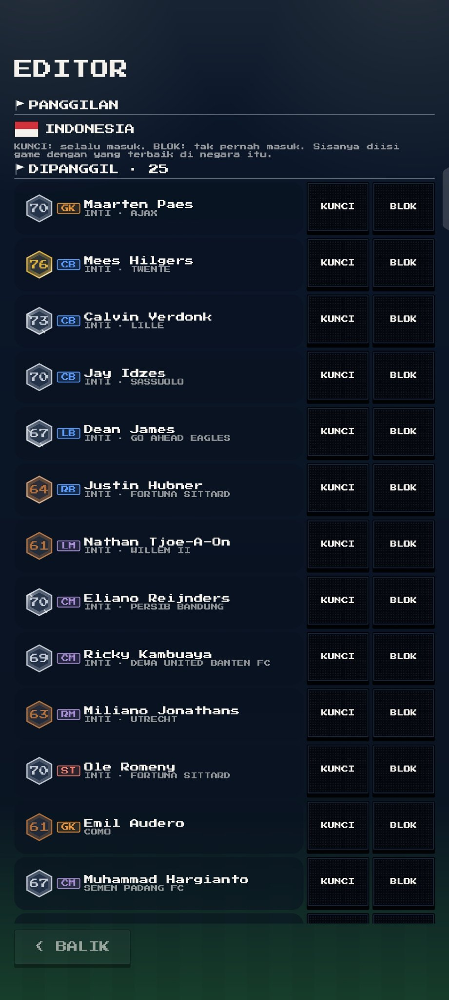
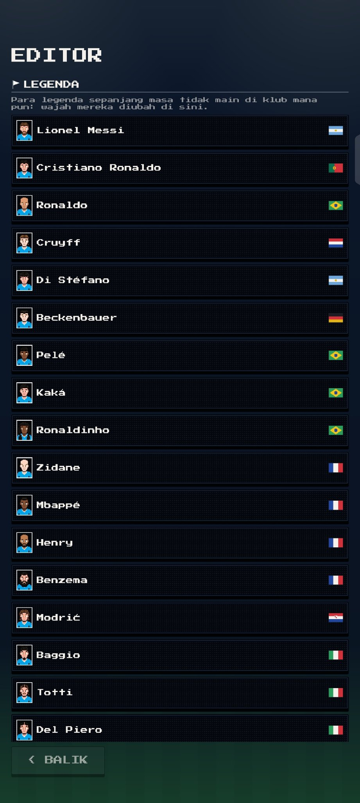
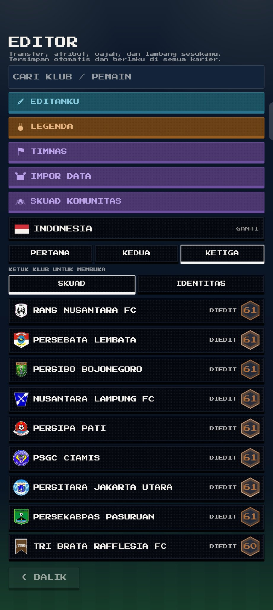

Re-edit pack Football Legacy: nama-nama klub yang tadinya kosong diisi dengan nama aslinya, supaya mainnya kerasa lebih nyata.
25 Nov 2026 — file ZIP 35 MB
Versi baru akan muncul di sini kalau ada update.
Geser ke samping untuk melihat semuanya →




Pack ini hanya mengisi nama-nama yang tadinya kosong dan menambahkan dua legenda. Tidak ada perubahan transfer, uang, atau rating pemain. Ada 162 pemain di 24 klub Liga 2 Indonesia yang namanya masih kosong — sengaja tidak diisi, karena namanya tidak boleh dikarang.
Pack ini BUKAN milik Ryan. Pack aslinya adalah pack_mundo_completo-v58 "Catalogo completo" dari komunitas Football Legacy di Discord. Ryan hanya me-re-edit isinya dan membagikannya di sini.
Re-work & Publisher: Ryans Work (Ryan) — mengisi 248 nama klub, memperbaiki 14 pelatih timnas, menambahkan Ronaldo & Messi ke legenda.
Komunitas aslinya: Discord Football Legacy